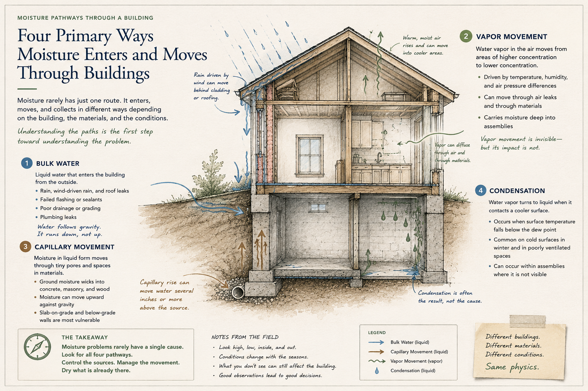

Buildings are assemblies of materials, cavities, penetrations, and pathways. Water can move through those assemblies before the first visible sign appears. Understanding a moisture condition begins by asking where the water came from—and how it traveled to the place where it was observed.
01 · Movement
How Moisture Moves Through a Building
Water can enter and move through a building in several different ways. Understanding how it moved is often the first step toward understanding where it came from.
Bulk Water
Rainfall, plumbing leaks, roof leaks, and groundwater can introduce liquid water directly into a building. Gravity influences where it travels, but framing, insulation, wall cavities, flooring systems, and other materials can redirect it along the way.
Capillary Movement
Water can move through small pores and spaces within building materials. Concrete, masonry, wood, and other porous materials may absorb and transport moisture beyond the location where water was first introduced.
Water Vapor
Moisture does not have to travel as liquid water. Water vapor moves with air and can also move through certain materials. Temperature, humidity, pressure differences, and the building enclosure all influence what happens next.
Condensation
When moisture-laden air encounters a surface cold enough to reach its dew point, water vapor can condense into liquid water. A wet surface therefore does not always indicate that water leaked onto it.
Where moisture appears and where moisture originates may be two different places.

02 · Materials
Materials Don't All Respond the Same Way
The presence of moisture is only part of the story. What becomes wet—and for how long—matters too. Building materials absorb, retain, release, and respond to moisture differently.
Drywall
Drywall can readily absorb water, particularly along cut edges and at the base of a wall. Its paper facing may be affected before obvious deterioration becomes visible.
Wood
Wood naturally contains some moisture and responds to changes in its environment. Persistent elevated moisture can contribute to swelling, distortion, deterioration, and conditions favorable to microbial growth.
Insulation
Insulation may be concealed within a wall or ceiling cavity and can retain moisture even when surrounding surfaces begin to dry.
Concrete & Masonry
These porous materials can contain or transport moisture without necessarily indicating a plumbing or building-envelope leak. Ground contact, drainage, vapor movement, and environmental conditions may all play a role.
Flooring Systems
Moisture from a slab, plumbing source, exterior intrusion, or previous water event may become trapped beneath relatively impermeable flooring.
A material can contain moisture without appearing visibly wet—and an elevated reading does not, by itself, identify the source.
03 · Measurement
What a Moisture Meter Can—and Cannot—Tell You
A moisture meter can be an extremely useful investigative tool, but the number displayed on the instrument needs context.
Depending on the instrument and material, measurements may help identify differences, patterns, and areas warranting closer investigation. Comparing an affected area with similar materials in an apparently unaffected area can often be more informative than looking at a single reading in isolation.
Measurement helps define the condition. Investigation helps explain it.
04 · Patterns
Patterns Tell a Story
A moisture reading becomes more useful when it is considered as part of a pattern. Where elevated moisture occurs, where it does not occur, how conditions change across adjoining materials, and how those observations relate to the building can all provide clues about a potential pathway.
A ceiling stain, for example, does not automatically mean the roof directly above it is leaking. Water can follow framing, piping, mechanical components, or other surfaces before reaching the material where the stain appears.
The visible condition tells us where to look. The pattern helps tell us where to look next.
As observations accumulate, some explanations become more plausible while others become less so. The process is iterative:
A good investigation doesn't force certainty where the evidence doesn't provide it.
05 · Limits
When the Source Isn't Obvious
Not every moisture condition can be traced to an obvious source during the initial investigation. Buildings contain concealed spaces, overlapping assemblies, plumbing systems, mechanical equipment, and exterior components that cannot always be fully evaluated without opening or removing materials.
Conditions may also be intermittent. Wind-driven rain, HVAC operation, plumbing use, and changing temperature or humidity can cause moisture to appear only under certain circumstances. Previous water events can complicate the picture as well.
Evidence of a moisture event is not necessarily evidence of an active moisture condition.
What Can We Say With Confidence?
When a source cannot be directly confirmed, the goal should not be to manufacture certainty. The investigation should establish what the available evidence supports: affected materials, moisture patterns, current conditions, plausible pathways, potential sources that appear less likely, and areas where additional investigation would be useful.
Example conclusionThe evidence supports a likely source or pathway, but additional investigation would be necessary to confirm it.
The findings should say what the evidence supports—and no more.
Sometimes the Next Step Is More Investigation
Additional work might involve monitoring during rainfall, evaluating plumbing or mechanical systems while operating, accessing concealed areas, or coordinating with an appropriate roofing, plumbing, HVAC, building-envelope, or other specialist.
The purpose is to answer the next useful question.
06 · Microbial Conditions
Moisture and Microbial Growth
Moisture and microbial growth are closely related, but they are not the same condition. Many building materials can support microbial growth when sufficient moisture is present for an adequate period of time, but moisture alone does not establish that growth is present.
A material that becomes wet and dries promptly represents a different situation from one that remains damp because the source continues, drying is restricted, or moisture is trapped within an assembly.
Addressing growth without addressing moisture leaves the underlying question unanswered.
If visible growth, unusual discoloration, odors, or other observations suggest that a separate microbial evaluation may be appropriate, those conditions can be investigated on their own merits. An elevated moisture reading does not automatically support the conclusion that a material contains mold—and a material being dry today does not necessarily tell us whether it experienced a moisture condition previously.
07 · Decisions
What Happens Next?
Once a moisture condition has been characterized, the investigation should help answer a practical question: What should happen next?
Sometimes the answer is straightforward: correct an active plumbing leak, repair a known exterior deficiency, dry affected materials, or evaluate damaged materials for appropriate repair or replacement. Other situations require additional investigation before corrective work can be confidently directed.
Good Information Should Narrow the Decision
An investigation does not need to explain every hidden condition within a building to be useful. It should reduce uncertainty. Identifying a probable pathway, determining that materials are currently dry despite evidence of a previous event, identifying an area that warrants destructive investigation, or ruling out an initially plausible explanation can all move the decision forward.
The goal isn't simply to find moisture. The goal is to understand enough about the condition to make the next decision well.
08 · Perspective
Understanding Before Acting
A visible stain may lead directly to an identifiable leak. In another building, the same observation may be the end point of a moisture pathway that began several feet away—or developed because of temperature and humidity rather than liquid water intrusion.
That is why the first explanation is not always the best explanation. Understanding a moisture condition means considering the building, the materials, the environment, and the available evidence together.
And when the evidence has reached its limit, say so.
A good investigation doesn't force certainty where the evidence doesn't provide it.
The purpose is not to produce the most definitive-sounding answer. The purpose is to produce the most useful answer the evidence can support.
Good decisions begin with good observations.